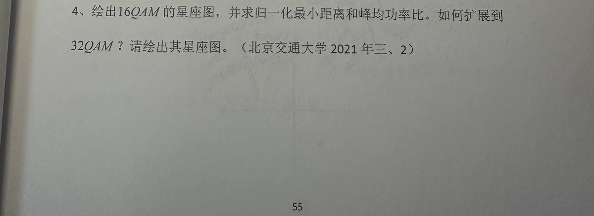
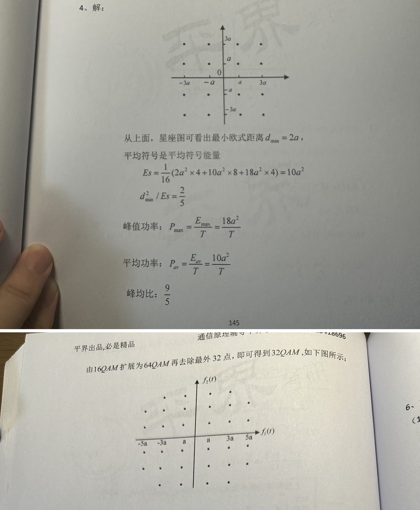

①栏公式应显示为正体数学排版（与 lianxi 刷题页一致）。若①栏仍为空白，说明浏览器禁了本地脚本——告诉我，我改用内嵌方式重出。
6、设随机过程 $Z(t)=X\cos wt-Y\sin wt$，$X$、$Y$ 是相互独立的均值为 0，方差为 $\sigma^2$ 高斯随机变量。（南京邮电大学 2019 年第四题）
（1）求 $E[Z(t)]$，$E[Z^{2}(t)]$
（2）求 $Z(t)$ 的一维概率密度函数
（3）求 $Z(t)$ 的自相关函数 $R_{z}(t,t+\tau)$，是否平稳。
6、解：
（1）$E[Z(t)] = E[X\cos wt - Y\sin wt] = E[X\cos wt] - E[Y\sin wt] = 0$
$$E[Z^2(t)] = E[X^2\cos^2 wt] + E[Y^2\sin^2 wt] - 2E[XY\cos wt\sin wt]$$
$$= \sigma^2\cos^2 wt + \sigma^2\sin^2 wt$$
$$= \sigma^2$$
（2）$D[z] = E[Z^2(t)] - E^2[Z(t)] = \sigma^2$
则有：$f(z) = \dfrac{1}{\sqrt{2\pi}\sigma}e^{\frac{-z^2}{2\sigma^2}}$
（3）
$$R_z(t, t+\tau) = E[Z(t)Z(t+\tau)] = E\{[X\cos wt - Y\sin wt][X\cos w(t+\tau) - Y\sin w(t+\tau)]\}$$
$$= \sigma^2\cos w\tau$$
因此是平稳随机过程。


4、绘出16QAM的星座图，并求归一化最小距离和峰均功率比。如何扩展到 32QAM？请绘出其星座图。（北京交通大学 2021 年三、2） 【图】
4、解：
【图】
从上面，星座图可看出最小欧式距离 $d_{\min}=2a$，
平均符号是平均符号能量
$$Es=\frac{1}{16}\left(2a^2\times 4+10a^2\times 8+18a^2\times 4\right)=10a^2$$
$$d_{\min}^2/E s=\frac{2}{5}$$
峰值功率：$P_{\max}=\dfrac{E_{\max}}{T}=\dfrac{18a^2}{T}$
平均功率：$P_{av}=\dfrac{E_{av}}{T}=\dfrac{10a^2}{T}$
峰均比：$\dfrac{9}{5}$
由16QAM扩展为64QAM再去除最外 32 点，即可得到 32QAM，如下图所示：
【图】
（右侧页边可见残缺文字：6-、（1）